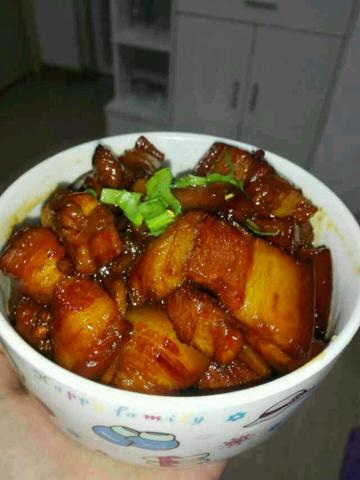

Home
红烧肉

描述：
色泽红亮，肥而不腻，入口软糯，是一道经典的中式菜肴。
成分
- 五花肉500克
- 桂皮1小块
- 香叶2片
- 八角2个
- 姜1块
- 葱2根
- 老抽1汤匙
- 盐适量
- 冰糖10颗左右
步骤
- 五花肉洗净，切成大小均匀的方块，冷水下锅，加入姜片、葱段和少许料酒，焯水后捞出沥干水分。
- 锅中放少许油，加入冰糖，小火炒至冰糖融化，变成焦糖色，冒小泡泡。
- 放入焯好水的五花肉块，翻炒均匀，让每块肉都裹上焦糖色。
- 加入桂皮、香叶、八角、姜片、葱段，继续翻炒出香味。
- 加入老抽，翻炒均匀上色。
- 加入适量清水，没过五花肉块，大火烧开后转小火，盖上锅盖焖煮1.5小时至2小时，直到五花肉变得软糯，汤汁浓稠，最后根据口味加入适量盐调味，大火收汁即可。